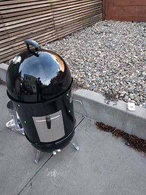
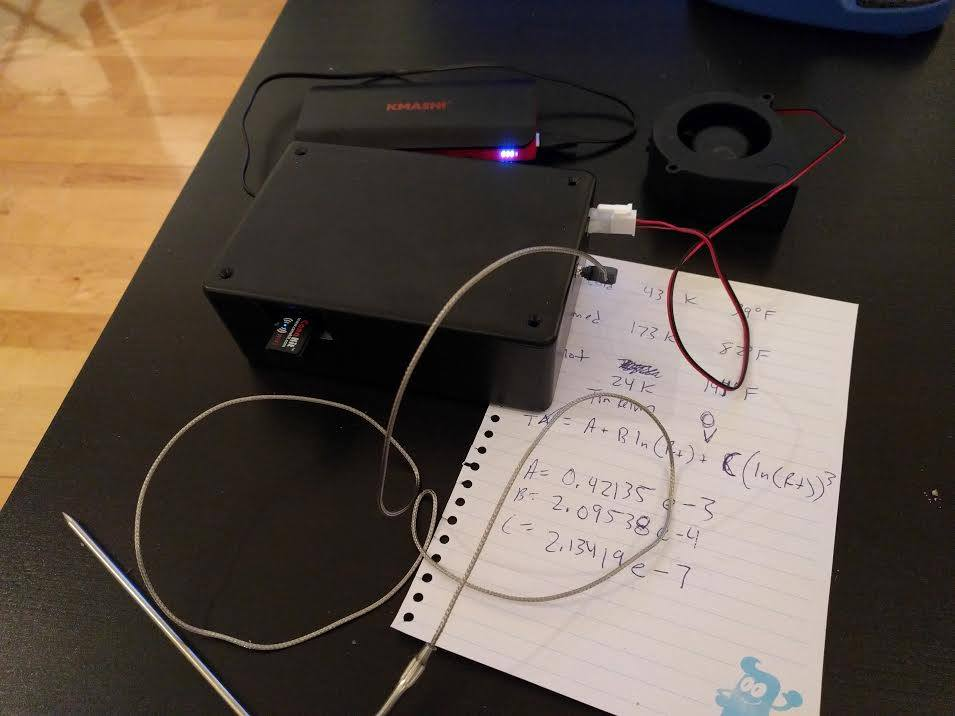
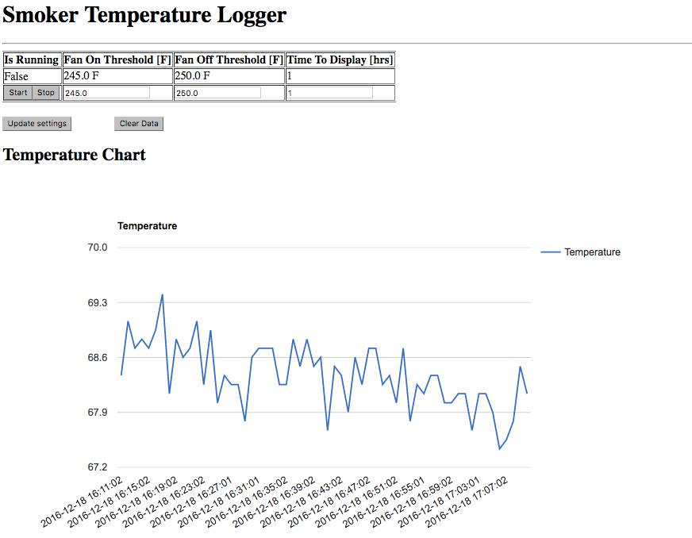
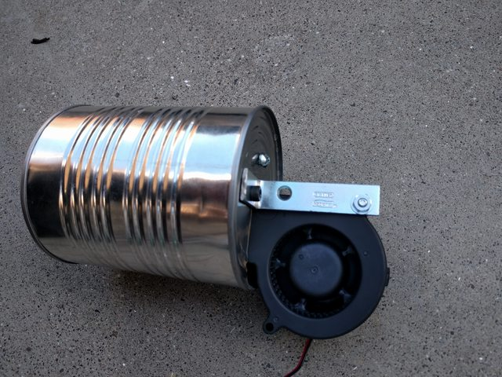
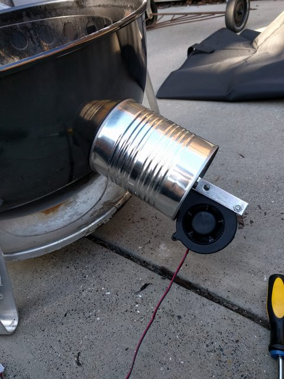
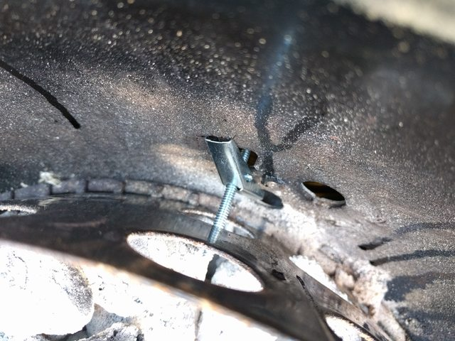
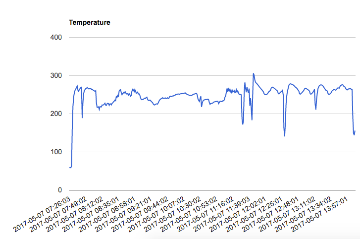

Smoker Temperature Controller
https://github.com/xconverge/SmokerController
I wanted a smoker so I chose the Weber Smokey Mountain! I got the 22″ version so that I can load it with a few racks of ribs with no issues.

This smoker uses charcoal as the heat source. Out of the box, you control the burn rate using vents on the bottom of the unit, with properly spread and lit charcoal, you can sustain 230 degrees for 7 or 8 hours with no problems before needing to add more fuel.
I wanted a way of controlling the temperature to within a few degrees of my setpoint (230 degrees) without needing to adjust the vents a bit every so often. I decided I would close 2 of the 3 vents and put a blower on the third vent to control how active the charcoal is burning, and accurately control the temperature.
Everything is running on a RaspberryPi which is powered with a 10000mAh mobile battery pack.
When the temperature falls below a threshold, the fan turns on to heat up the charcoal. When it hits another threshold, the fan shuts down.
There is also a sqlite3 database of all of the past temperatures for plotting using the google chart API.
The temperature probe is a Maverick ET-73 replacement probe from Amazon.

The first thing I had to do once I received the probe was characterize it to create a polynomial equation to correlate resistance to temperature. These probes are not linear.
Ice water, room temp water, and boiling water was used to find 3 data points of resistance/temp. I then solved the system of equations to model it after the Steinhart-Hart equation for resistance. The coefficients matched the curve pretty well.
I then used a voltage divider with a 10k ohm fixed resistance to read the probe into the A2D chip. I used a MCP3008 a2d which is a 10 bit 8 channel ADC with SPI.
SPI was then used to interface between the a2d and the raspberry pi
Screenshot of the interface

Here is the blower mechanism I made using a 12v fan and a tomato can.


I used a toggle bolt to be able to temporarily mount the can to the smoker vent.

Below is the log file from a run with a few racks of ribs and a brisket! The set point was 275 degrees. You can see in the middle of the plot, a point where the fan was turning on and off every minute or so. The large drops are from when I opened the smoker to flip or sauce something. Overall I think that the WSM smoker is pretty stable either way due to having a water pan inside, however as the water pan emptied (towards the right hand side of the plot) the controller is nice to make sure temperatures do not spike too high.
